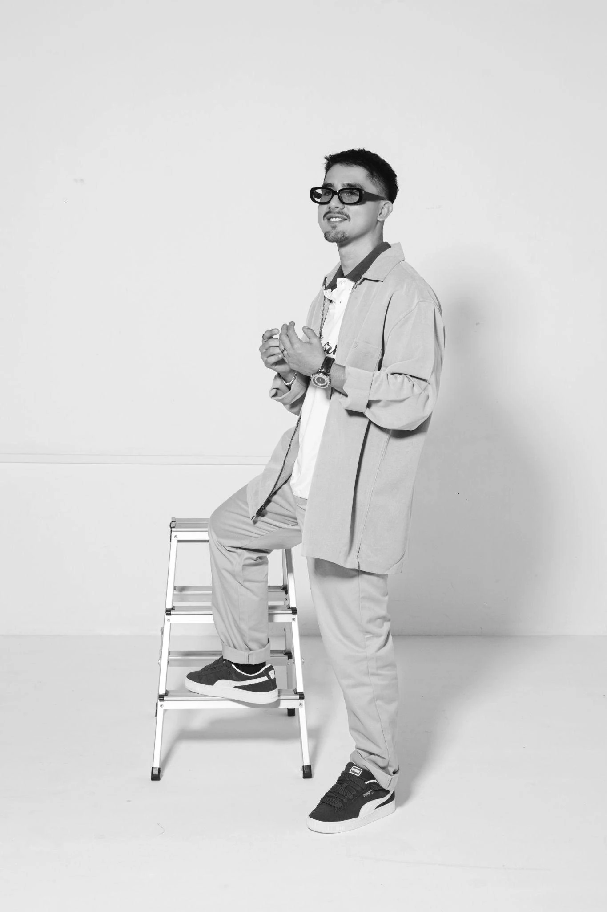

01↗
Estrategia & marketing
Marketing digital, estrategias de contenido, redes sociales, storytelling, conceptos, campañas y copys.
01 Digital Marketing & Content Creator
Creativo enfocado en marketing digital, creación de contenido y producción audiovisual.Combino ideas, estrategia y storytelling para desarrollar contenido auténtico que conecte con las personas y fortalezca la identidad de marcas y proyectos.

CREATIVITY / STRATEGY / CONTENT02 Capacidades
Marketing digital, estrategias de contenido, redes sociales, storytelling, conceptos, campañas y copys.
Grabación, edición de video, fotografía, coordinación de sesiones, asistencia y organización de producciones.
Contenido para marcas y artistas, videos cortos, comunicación digital y manejo de cuentas.
Gestión administrativa, documentación, coordinación de equipos, atención al cliente y trabajo bilingüe.
03 Perfil creativo
Me gusta convertir ideas en contenido claro y atractivo, combinando creatividad, estrategia y organización en cada proyecto.
Conocer mi experiencia ↗Exploro ideas con libertad, pero trabajo con objetivos, estructura y dirección.
Comunicación clara, humana y cercana, sin perder intención ni criterio.
La estética acompaña al mensaje para que cada proyecto conecte y sea fácil de entender.
04 Trabajo seleccionado
PROYECTO / 001
Modelo de producción
Participación frente a cámara dentro de producciones pensadas para redes sociales.
PROYECTO / 002
Modelo de producción
Participación frente a cámara dentro de piezas de comunicación para redes sociales de la marca.
PROYECTO / 003
Dirección creativa
Dirección creativa para el lanzamiento del sencillo “Soledad”, integrando concepto, contenido audiovisual y sesión fotográfica.
PROYECTO / 004
Coordinación y dirección creativa
Coordinación y dirección creativa del lanzamiento, video oficial y sesión fotográfica del sencillo “Travesuras”.
PROYECTO / 005
Dirección creativa, coordinación y producción de video
Desarrollo creativo y coordinación de la producción audiovisual para el sencillo “Dime Que Sí”.
PROYECTO / 006
Creación de contenido
Exploración de formatos cotidianos, musicales y visuales para construir una comunicación auténtica alrededor de mi identidad artística.
05 Música & cultura
Mi experiencia como artista fortalece mi capacidad para comprender la creatividad, la comunicación, el contenido y la construcción de identidad.
Explorar mi perfil artístico ↗06 Contacto